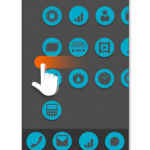
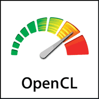
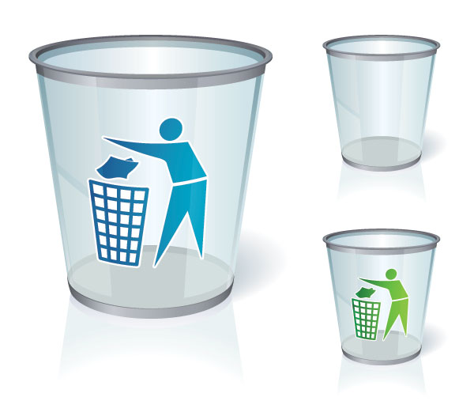

Application 效能分析有妙招 — 使用 perf 走天下

在手機上面，Application 的實作往往會影響到效能好壞以及是否夠省電，其中 Application 的 CPU 使用量會是一個非常關鍵的因素。 以下就拿使用 Firefox OS 的手機來做舉例說明，首先透過下面的 top 指令，可以看到整體 System 以及 Application 的 ...
4 篇文章


